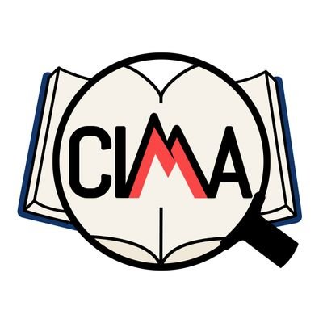

"Un despliegue policial sin precedentes en la concentración pacífica frente al Rectorado de la Universidad de Málaga", Malagaldia (16 de mayo). Leer la noticia completa
NOVEDADES: ASAMBLEA MARTES 27 DE MAYO A LAS 12:00
Llevamos ya más de un año viviendo recortes en la docencia, la investigación y los servicios de la UMA. Cada día, nos encontramos con recortes nuevos: los servicios de cafetería, la biblioteca, la no contratación de profesorado y personal de administración y servicios, bajas que no se cubren tanto en PTGAS y como en PDI, y que supone un aumento de trabajo para los demás, bloqueo de programas de estabilización y promoción, la merma en los recursos para la investigación, materiales que faltan en clase, ayudas sociales...
Todos estos recortes se aplican sin un espacio de participación real de la comunidad universitaria, ni tampoco con la transparencia que exige la situación en que nos encontramos y están poniendo en peligro nuestra Universidad Pública.
¿Quieres saber de dónde vienen los recortes? ¿Quiénes están tomando estas decisiones y cómo lo están haciendo? Para conocer mejor toda la situación y participar en las decisiones y próximas movilizaciones contra los recortes te esperamos en la próxima asamblea impulsada por UMA x la Pública, la coordinadora que agrupa a diferentes colectivos y sindicatos de la UMA.
Será el próximo martes, 27 de mayo a las 12:00h de forma simultánea en los tres campus de nuestra universidad:
AMPLIACIÓN
FACULTAD DE CC DE LA SALUD
HALL
TEATINOS
FACULTAD DE CIENCIAS DE LA EDUCACIÓN
HALL
EL EJIDO
FACULTAD DE BELLAS ARTES
HALL
ESTA CONVOCATORIA DE ASAMBLEAS ESTÁ COMUNICADA COMO UN PARO LABORAL DE 3H PARA FACILITAR LA ASISTENCIA TANTO DE PDI COMO DE PTGAS (DESDE LAS 11.30H A LAS 14.30H).
¡NOS VEMOS EN LA ASAMBLEA!
UMA x la Pública
¿Quiénes somos?
La Coordinadora UMA x la Pública es una aglomeración de distintos colectivos que luchan en defensa de la universidad pública. Nuestro objetivo es garantizar una educación accesible, inclusiva y de calidad para todas las personas.
Colectivos que forman parte de la coordinadora:
 PSI-UMA (Profesores Sustitutos Interinos)
PSI-UMA (Profesores Sustitutos Interinos)

CIMA (Investigadores de Málaga)
Ayudantes Doctores - Plazas 2023
CPAD (Profesores Ayudantes Doctores)
 ACUMA (Acreditados a Cátedra)
ACUMA (Acreditados a Cátedra)
 Frente de estudiantes
Frente de estudiantes
 SIAM (Sindicato de Apoyo Mutuo de la Universidad de Málaga)
SIAM (Sindicato de Apoyo Mutuo de la Universidad de Málaga)
 CCOO (Comisiones Obreras)
CCOO (Comisiones Obreras)
Nuestras reivindicaciones
La Universidad de Málaga, como el conjunto del sistema público universitario español, atraviesa una etapa crítica marcada por una injusta infrafinanciación por parte de la Junta de Andalucía y por una gestión institucional que da la espalda a su comunidad. Desde la Coordinadora UMA por la Pública, que agrupa a diversos colectivos y sindicatos, exigimos un cambio profundo en las condiciones laborales, académicas y sociales que garantice el futuro de una universidad verdaderamente pública, inclusiva y comprometida con la igualdad de oportunidades. La combinación del Plan de Ajuste Económico, la entrada sin control de universidades privadas en la ciudad y la pasividad del equipo rectoral, que incumple de forma sistemática su programa electoral en materia de personal, perpetúa la precariedad, la desigualdad y el deterioro del sistema universitario público. Es urgente revertir esta deriva: hay que garantizar una financiación justa que repare los recortes arrastrados desde 2012 y, sobre todo, exigir al equipo rectoral que cumpla su palabra, asuma responsabilidades y sitúe de una vez a las personas en el centro de su acción institucional.
Financiación adecuada y justa
Es necesario garantizar una financiación adecuada y justa para la UMA, que revierta la infrafinanciación histórica que arrastramos desde 2012 y asegure recursos suficientes para el desarrollo académico y la investigación. La universidad debe ser una prioridad para la Junta de Andalucía y, para el equipo que gobierna la institución, una máxima que defender continuamente.
Promoción y estabilización de la plantilla
La promoción y estabilización de la plantilla son un derecho y deben estar desvinculadas de limitaciones presupuestarias coyunturales que afectan injustamente a nuestro futuro profesional. Exigimos planes de estabilización que permitan el desarrollo de la carrera profesional para todo el personal docente e investigador (PDI), como son profesorado interino, personal investigador, asociados y ayudantes doctores, y para el personal técnico, de gestión, administración y servicios (PTGAS). Exigimos la reactivación de los procesos de promoción para los ayudantes acreditados a titular y el personal funcionario acreditado a cátedra, con un calendario claro y transparente.
Sistema retributivo justo
Reivindicamos un sistema retributivo justo que garantice el reconocimiento y pago de los complementos salariales a todo el personal docente e investigador, independientemente de la figura contractual. Rechazamos la precariedad laboral estructural que suponen las múltiples categorías contractuales, así como los retrasos en los pagos por parte de la Junta de Andalucía. Demandamos además la activación de contrataciones paralizadas y una oferta de empleo público que cubra el 100% de las jubilaciones.
Becas y ayudas para el estudiantado
Exigimos la reactivación y ampliación de becas y ayudas para nuestro estudiantado, como las del comedor, y una mejora urgente en la gestión de sustituciones del profesorado para evitar demoras de meses. Reclamamos inversión en materiales didácticos y bibliográficos, precios justos en las futuras residencias universitarias, y el reconocimiento y remuneración de todas las prácticas a cargo de la entidad beneficiaria.
Docencia e investigación
La docencia e investigación son actividades esenciales en la universidad. El equipo actual debe garantizar que se desarrollarán en las mejores condiciones de calidad y de reconocimiento en los planes anuales de trabajo del personal. Nuestro personal investigador debe tener una carrera definida al mismo nivel que el resto de universidades españolas y europeas. Se debe garantizar un marco eficiente que garantice las ayudas sociales y las actividades de transferencia de la investigación que revierten en la sociedad.
Consideramos necesaria la asunción de responsabilidad por parte del equipo rectoral, si no se revierte el incumplimiento del programa electoral que se viene produciendo de forma sistemática en materia de personal.
No queremos trabajar en condiciones precarias. Queremos trabajo digno para transferir a la sociedad el conocimiento que generamos y garantizar una educación pública, accesible y de calidad.
Noticias
"Colectivos de la UMA denuncian "excesiva presencia policial" e "impedimento de acceso" en una protesta frente al Rectorado", MálagaHoy (16 de mayo). Leer la noticia completa
"La plataforma ‘UMA por la Pública’ señala un «despliegue policial sin precedentes» en una concentración en el rectorado", EspacioAndaluz (16 de mayo). Leer la noticia completa
"Un centenar de docentes protestan contra los recortes económicos en la UMA", 101tv (16 de mayo). Leer la noticia completa
"Profesoras de la Universidad de Málaga se concentran frente al Rectorado de la UMA", Onda Cero (16 de mayo). Leer la noticia completa
"Nueva protesta contra los recortes económicos en la UMA", Diario Sur (15 de mayo). Leer la noticia completa
"IU respalda la movilización 'UMA por la pública' y acusa a Moreno de "trabajar para las universidades privadas"", Europa Press (15 de mayo). Leer la noticia completa
"Los críticos contra los recortes en la UMA se reúnen en una plataforma", Diario Sur (13 de mayo). Leer la noticia completa
"Los docentes de la Universidad de Málaga claman contra los recortes en pleno desembarco de universidades privadas", ElDiario.es (13 de mayo). Leer la noticia completa
"Nace UMA x La Pública, la coordinadora en defensa de la Universidad", MálagaActualidad (13 de mayo). Leer la noticia completa
"El colectivo ‘UMA por la Pública’, integrado por sindicatos, asociaciones y plataformas del ámbito universitario, convoca una protesta mañana jueves 15 frente al rectorado del Parque para reclamar una universidad pública y de calidad", El Observador (13 de mayo). Leer la noticia completa
Descargas
Descarga el cartel de la concentración del 15M: Cartel Concentración 15M
Contacto
Si deseas ponerte en contacto con nosotros, puedes escribirnos a nuestro correo electrónico:
Síguenos también en Instagram: